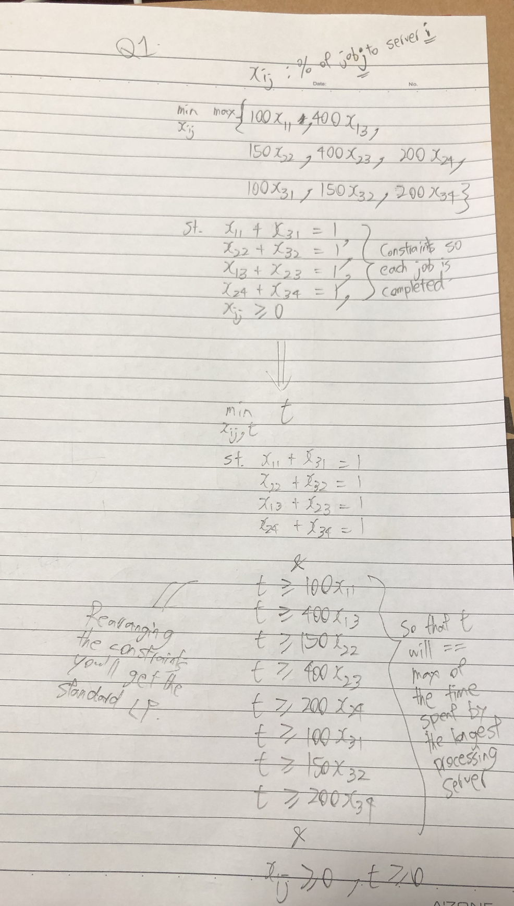
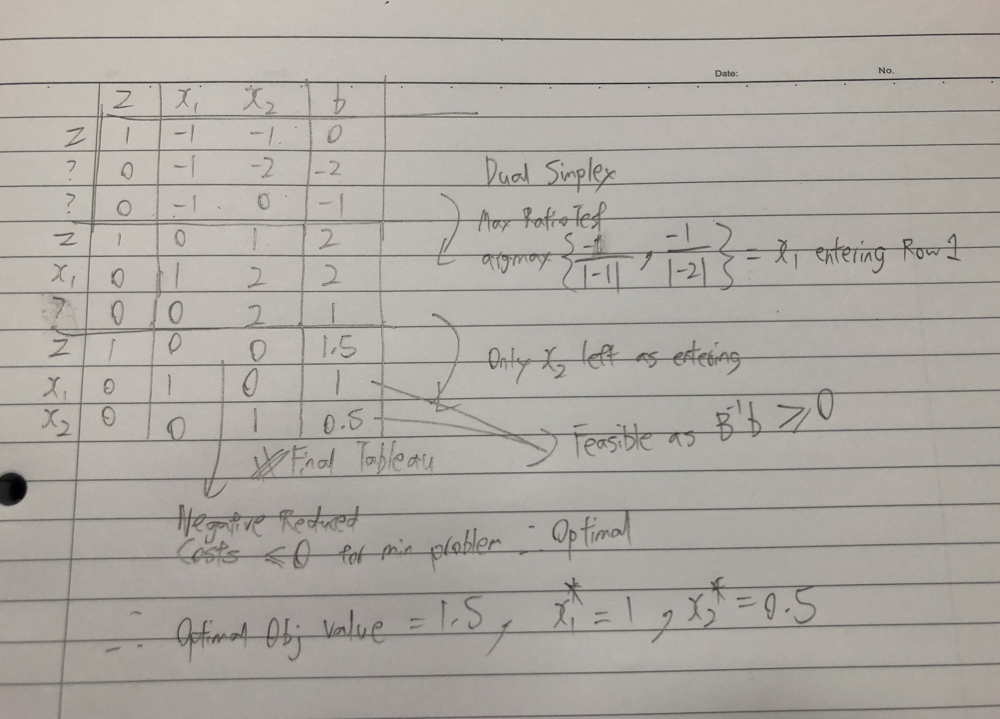
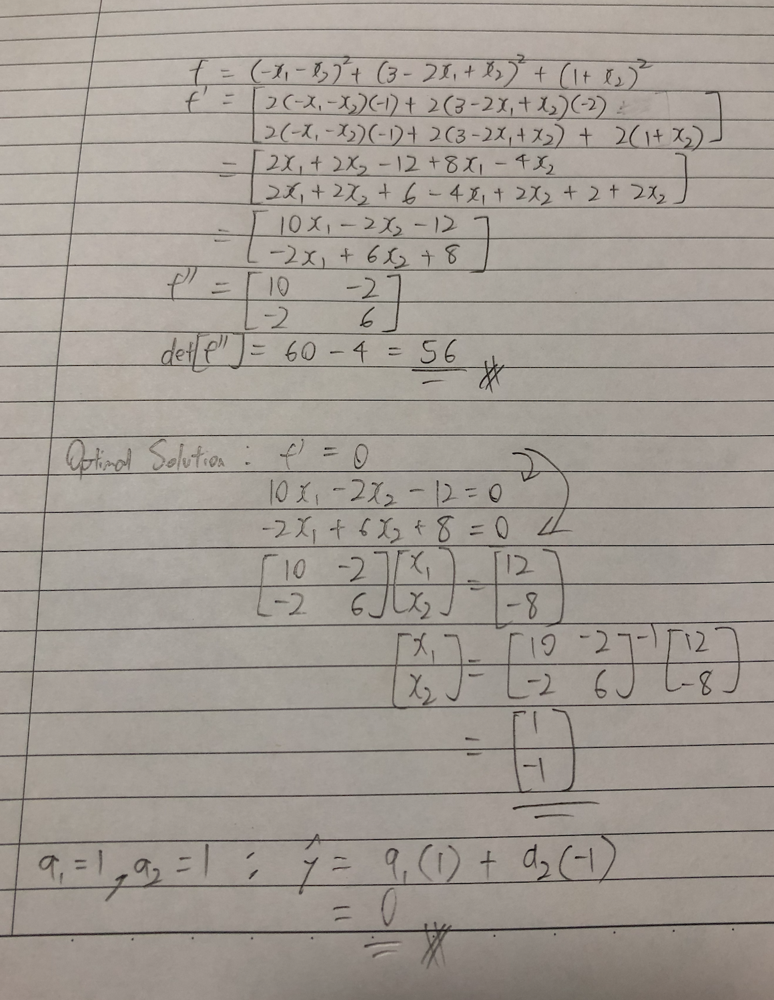

Midterm¶
By: Chengyi (Jeff) Chen
%load_ext autotime
%load_ext nb_black
%matplotlib inline
import matplotlib.pyplot as plt
from mpl_toolkits.mplot3d import Axes3D
plt.rcParams["figure.dpi"] = 300
plt.rcParams["figure.figsize"] = (16, 12)
import pandas as pd
import numpy as np
import cvxpy as cp
import scipy as sp
from scipy import optimize
import functools
1.¶
2.¶
# Create one vector optimization variable.
x = cp.Variable((2,), integer=False)
# Create constraints.
constraints = [
x[0] + 2 * x[1] >= 2,
x[0] >= 1,
x[1] >= 0,
]
# Form objective.
obj = cp.Minimize(np.array([1, 1]) @ x)
# Form and solve problem.
prob = cp.Problem(obj, constraints)
prob.solve()
print("Linear Programming Solution")
print("=" * 30)
print(f"Status: {prob.status}")
print(f"The optimal value is: {np.round(prob.value, 2)}")
print(f"The optimal solution is: x = {[np.round(x_i, 2) for x_i in x.value]}")
Linear Programming Solution
==============================
Status: optimal
The optimal value is: 1.5
The optimal solution is: x = [1.0, 0.5]
time: 14.4 ms
Dual Simplex Method
Dual Program:
Optimal Dual Solution by Duality: \(y = c_B B^{-1}\)
np.array([1, 1]) @ np.linalg.inv(np.array([[1, 2], [1, 0]]))
array([0.5, 0.5])
time: 3.45 ms
3.¶
# Create one vector optimization variable.
x = cp.Variable((6,), integer=False)
# Create constraints.
constraints = [
np.ones((6,)) @ x == 100,
x[0] <= 30,
x[1] <= 30,
x[2] + x[3] <= 50,
x[5] - x[4] >= -10,
x >= 0,
]
# Form objective.
obj = cp.Maximize(np.array([1.5, 2, 1.2, 1.3, 2, 1.1]) @ x)
# Form and solve problem.
prob = cp.Problem(obj, constraints)
prob.solve()
print("Linear Programming Solution")
print("=" * 30)
print(f"Status: {prob.status}")
print(f"The optimal value is: {np.round(prob.value, 2)}")
print(f"The optimal solution is: x = {[np.round(x_i, 2) for x_i in x.value]}")
Linear Programming Solution
==============================
Status: optimal
The optimal value is: 173.0
The optimal solution is: x = [0.0, 30.0, 0.0, 0.0, 40.0, 30.0]
time: 23.9 ms
constraints[0].dual_value
1.5500000000000114
time: 1.68 ms
Dual:
Optimal Primal Solution from Optimal Dual Solution:
By CS: \((x_1=0.0, x_2=30.0, x_3=0.0, x_4=0.0, x_5=40.0, x_6=30.0)\)
Add \(-1.4x_7\) to the objective of the primal and \(-x_7\) to the LHS of the first constraint.
Yes you should. The dual variables / shadow prices indicate how much the objective value will increase given a unit increase in the primal constraints. \(y_1 = 1.55\) means that the objective will increase by 1.55 if \(100\) becomes \(101\) for the RHS of the 1st constraint, this is greater than the interest paid for the amount borrowed which will be \(1.40\), meaning that we can borrow at \(1.04\), and yet get an increase in \(1.55\) in the total return, which will be wise to take the loan.
4.¶
np.linalg.eigvals(np.array([[10, -2], [-2, 6]]))
array([10.82842712, 5.17157288])
time: 2.35 ms
Eigenvalues of hessian are \(> 0\), meaning that function is strictly convex.
np.linalg.inv(np.array([[10, -2], [-2, 6]])) @ np.array([12, -8])
array([ 1., -1.])
time: 3.67 ms
Solution is unique @ \(x_1 = 1, x_2 = -1\)
Prediction of y: 0.